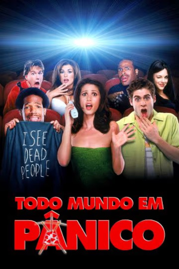
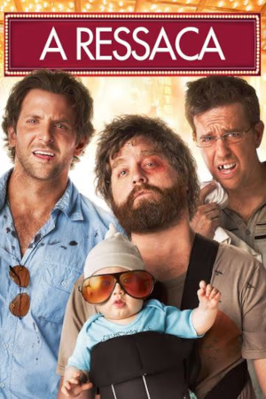
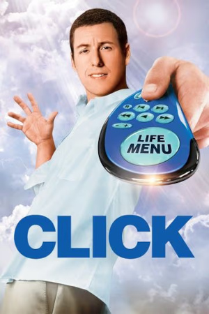
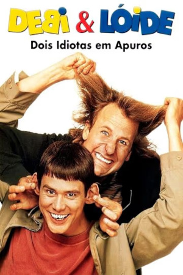
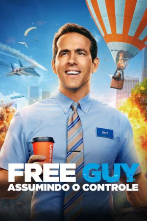
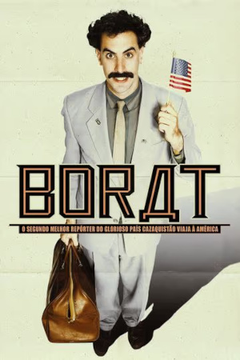

Depois do assassinato de uma bela colega de classe, um grupo de adolescentes desorientados descobre que há um assassino entre eles. A heroína Cindy Campbell e a sua turma de amigos mauricinhos e patricinhas, tentam se proteger do perigo... Mas uma reporter irritante, Gail Hailstorm, simplesmente não os deixa em paz! Parece familiar? Talvez sim, mas essa história repleta de reviravoltas e surpresas horripilantes e humor ultrajante extrapola no gênero de horror e ação.

Dois dias antes de seu casamento, Doug e três amigos vão de carro até Las Vegas para uma louca e memorável despedida de solteiro. Quando os três padrinhos acordam na manhã seguinte, eles não conseguem se lembrar de nada e notam que Doug desapareceu. Com pouco tempo de sobra, os amigos tentam refazer a noite anterior e encontrar Doug para que possam levá-lo de volta a Los Angeles a tempo de chegar ao altar.

Um arquiteto casado e com filhos está cada vez mais frustrado por passar a maior parte de seu tempo trabalhando. Um dia, ele encontra um inventor excêntrico que lhe dá um controle remoto universal, com capacidade de acelerar o tempo.

Dois amigos debilóides vão para Aspen, no estado do Colorado, para tentar devolver uma maleta esquecida pela passageira da limusine que um deles estava dirigindo para o aeroporto. Sem saber que na mala havia uma quantia enorme de dinheiro, que serviria para pagar o resgate de um sequestro, os dois acabam sendo perseguidos pela polícia e por assassinos profissionais.

Um caixa de banco preso a uma entediante rotina tem sua vida virada de cabeça para baixo quando ele descobre que é personagem em um brutalmente realista vídeo game de mundo aberto. Agora ele precisa aceitar sua realidade e lidar com o fato de que é o único que pode salvar o mundo.

Um famoso repórter do Cazaquistão viaja aos Estados Unidos para fazer um documentário sobre os hábitos dos cidadãos norte-americanos, provocando situações absurdas por onde passa.